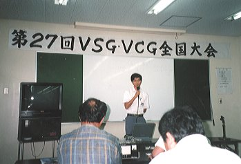
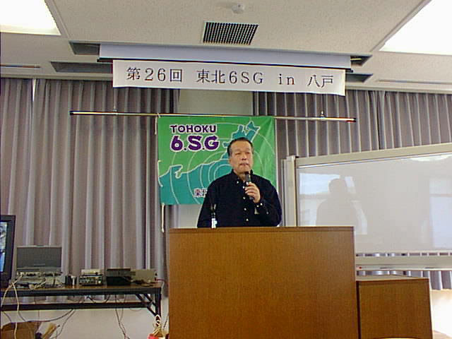

参加者全員で記念撮影（写真提供:JR0QFA）／今回の幹事長、JR0QFA・加藤さんの挨拶（右）

【'97 VSG/VCG・全国大会・参加者】
JA1RJU JR2HCB JA3XQO JA4NUE JO6AKR JH7VEP JA9CGR JA0IOF JR0CGJ
JA1VOK JR2ULS 〃2nd JA4TOH JE9BHE JA0GPT JR0FEK
JE1BMJ JE2AVX JR3HED JG4NDR JA0LKK JR0QFA
JE1HLR JE2IIH JR4FLW JA0LSQ JR0ULH
JE1TGN JE2WLD JG4BLW JA0LUX
JG1KYL JM2QOY JL4GTO JA0TJU
JL1ABP JE2XBY JN4CIW JH0EGT
JM1AEO JI2NSR JH0IGG
JM1WDJ JH0ISW
JP1VOC JH0MUC
前略
さて、50MHzマンの皆様におかれましては、日夜FBにご活躍のことと思います。今年は、長野県で
開催される事が決定しております。
私どもはこの大会を長野県で行える事を大変うれしく思っております。
大会は、下記の要領で開催します。会場は、高速道路やJR、松本空港からのアクセスを考え、設定い
たしました。
日時 1997年9月13日(土)～14(日) （13日は午後６時より前夜祭開催）
場所 JAアスティ－かたおか
長野県塩尻市片岡東山9215-1401 Tel.0263-52-7600(代)
会費 前夜祭に参加して宿泊する場合 -- 土日通 -- 15,000円
前夜祭のみ参加(宿泊無し)の場合 --土曜日のみ-- 12,000円
当日14日のみ参加の場合(10:00開会) --日曜日のみ-- 3,000円
交通 松本空港：
JR利用 ： JR塩尻駅下車
到着予定時刻を前もってお知らせいただければ、送迎いたします。
送金 送金は、郵便振替をご利用下さい。
口座番号[00520-3-32540] 代表者氏名[武井昭人]
振替先加入者名[VSG長野]
送金は8月30日(土)までにお願いします。以後はご面倒ですが現金書留にてお願いします。
なおキャンセルの場合、会場の都合により、事務経費を差し引きの上、会費の払い戻しを致しますが、
9月5日(金)以後は払い戻しが出来ませんのでご了承下さい。
現金書留送付先：長野県岡谷市東銀座 武井昭人 JH0IFE 宛
何れの場合にも振り込み者の住所・氏名・電話番号・コールサイン等を正確にご記入下さい。
ご家族で参加される方で、同室をご希望の場合､事前にお知らせ下さい。
予定人員に達し次第締め切りとさせていただきます。
問い合わせ先(緊急の場合を除き、電話での連絡はご遠慮下さい)
大会会長 JR0QFA 〒399-45 上伊那郡南箕輪村5930-3 加藤治明
(jr0qfa@clio.or.jp)
副 会 長 JH0ODI 〒389-05 小県郡東部町本海野1719-3 依田靖弘
JR0CGJ 〒384-23 北佐久郡立科町芦田2603 清水孝
(jr0cgj@avisnet.or.jp)
会 計 JH0IFE 〒394 岡谷市東銀座1-12-20 武井昭人
事務局 JA0GPT 〒384-01 長野県佐久市鍛冶屋230 植松和則
(uematsu@avisnet.or.jp)
JH0IGG 〒396 伊那市大字伊那部4632-1 岡村昌仁
(okamura@clio.or.jp)
広 報 JH0MHE 〒389-01 北佐久郡軽井沢町758 小林士郎
(jh0mhe@avisnet.or.jp)
JH0MHE 小林 士郎

【第26回6SG八戸大会参加者】
JA1CJB JA7KHQ JH7MQU JE7AUP JJ7THL JA7KDZ
JA1DWQ JA7MIT JH7QHN JE7CAI JK7IKU JH7PTS
JA1RJU JA7QMH JH7QLS JE7GWN JK7LNB
JK1BEY JA7QPB JH7UPW JF7REV JL7IWF
JL1ABP JA7QVI JH7VEP JF7UNR/1 JL7RFQ
JP1MQZ/7 JA7WSZ JH7VTE JG7BBO JL7XRT
JA7NL JH7BKN JH7XMY JI7HMI JM7TSX
JA7BZU JH7BUL JR7EXS JI7NAI JA8CRB/7
JA7FEX JH7LLE JR7HKY JI7WTK JH8FAJ/7
JA7DTG JH7JGM JE7HMZ JK7OSL JF7WTI
（順不同・他に当日参加者あり）
【JA1RJU・小笠原 一夫】